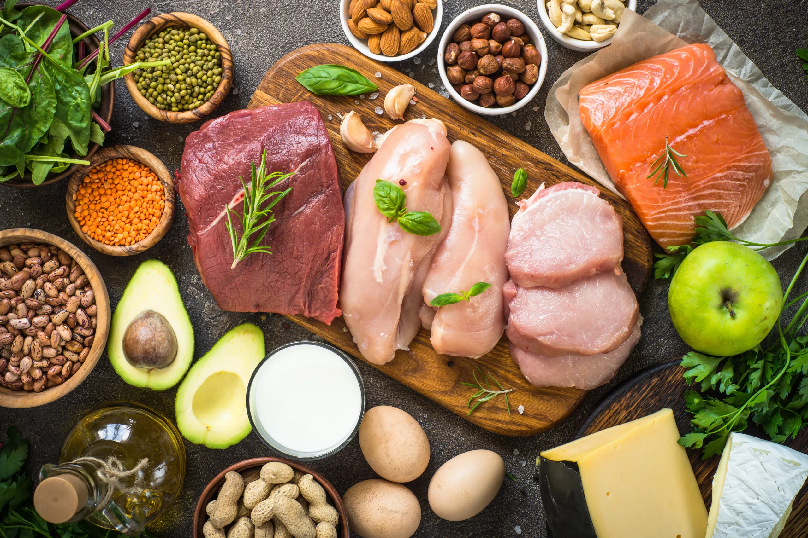

Proteīns
Miegs
Sports
Kopsavilkums muskuļu uzbūvei
Pietiekams miegs
Augšanas hormons, kas intensīvi palielina audu masu, tiek sintezēts gulēšanas laikā.
Proteīns
Nevar uzbūvēt muskuļus no nekā. Kā māju jāceļ no ķeģeļiem, tā arī muskuļus jābūvē no proteīna.
Sports
Diemžēl, ķermenis dedzina enerģijai ne tikai taukus, bet arī muskuļus. Tie ir jāizmanto, lai tie neatrofētos.
Kā var sasniegt vēl labākus rezultātus?
Nodarbini katru muskuli vismaz divas reizes nedēļā.
Nedari pārāk daudz. Katram muskulim pietiek ar ar 6-15 setiem nedēļā.

Staipies. Staipīšana padara muskuli garāku jeb atvieglo tā augšanu.
Disciplīna. Turpini setu līdz fiziski nespēsi atkārtot vingrinājumu, saglābajot izpildīšanas tehniku.